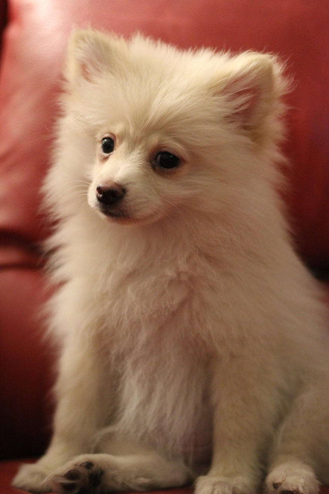
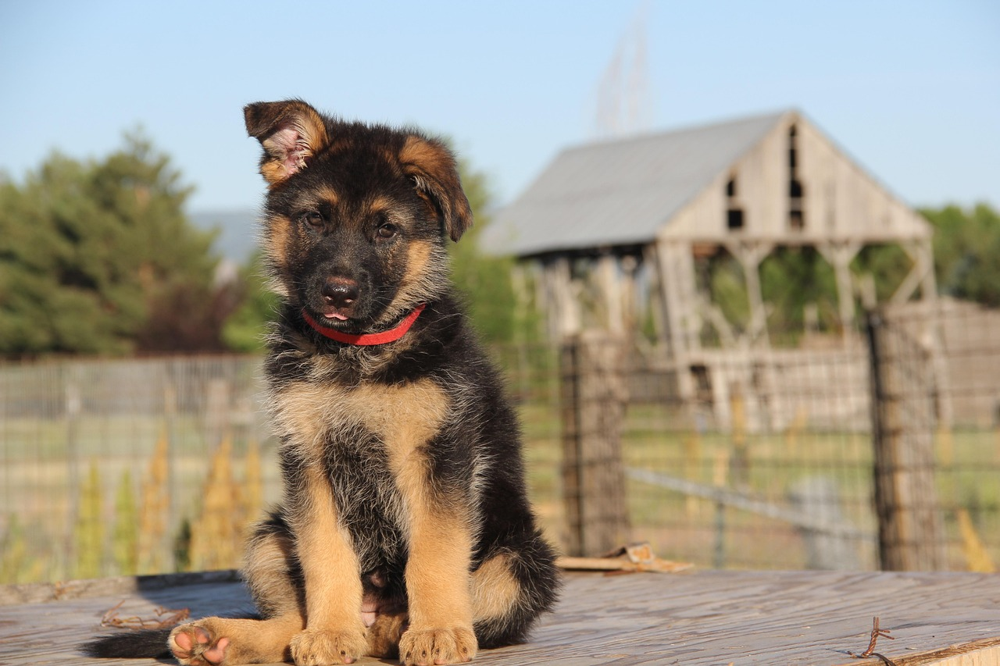

Dog Breeds and Their Characteristics
Dogs are always categorised according to their colors, physical appearances, and temperament. There are several breeds of dogs available across the world, so defining all of them isn't possible. I personally got a chance to experience 4 different breeds; therefore, I'm listing them below:
Pomeranian
Pomeranians thrive on human interaction and require a person who can provide them with love, attention, and companionship to flourish. They are affectionate and loyal, often forming strong bonds with their owners. Pomeranians can help manage stress and anxiety, release endorphins, and bring about a sense of peace.
- Fur Colors: White, Cream, Orange, Black, Chocolate, Blue, Beaver, Sable, Parti-color, and Tri-color.
- Personality: Friendly, affectionate, and loyal nature.
German Shepherd
German Shepherds are widely used in the military due to their Intelligence, loyalty, and versatility. Developed by Captain Max von Stephanitz, these dogs were bred to military and police applications, showcasing traits like dedication, tenacity, and adaptability to various task.
- Fur Colors: Black and Tan, Sable, Panda, and Liver.
- Personality: Intelligent, loyal, and protective nature.
Golden Retriever
These dogs excel as service animals due to their intelligence and eagerness to please. They are often trained as guide dogs for the visually impaired, assistance dogs for individuals with disabilities, and search and rescue dogs. Their ability to learn commands quickly and their calm demeanor make them suitable for various service roles.

- Fur Colors: Standard Golden, Light Golden, Dark Golden, Cream, and Red.
- Personality: Friendly, loyal, and intelligent.
French Bulldog
The primary purpose of French Bulldogs has always been companionship. They became popular among lace workers in England, who brought them to France during the Industrial Revolution. In France, these dogs quickly gained favor among the upper classes and artists, becoming symbols of status and affection.

- Colors: Common color is Brindle, which has a mixture of Black, Brown, Tan, Blue, and sometimes Gold.
- Personality: Friendly and affectionate, playful and fun-loving, stubborn, adaptable, and potential challenges.